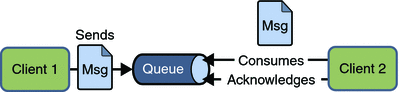

JMS即Java消息服务（Java Message Service）应用程序接口是一个Java平台中关于面向消息中间件（MOM）的API，用于在两个应用程序之间，或分布式系统中发送消息，进行异步通信。
Java消息服务是一个与具体平台无关的API，绝大多数MOM提供商都对JMS提供支持。
JMS (Java Message Service) is an API that provides the facility to create， send and read messages。
It provides loosely coupled（松耦合）， reliable（可靠） and asynchronous（异步） communication。
JMS消息中间件
JMS全称是Java Message Service。其是JavaEE技术规范中的一个重要组成部分，是一种企业消息处理的规范。它的作用就像一个智能交换机，负责路由分布式应用中各个组件所发出的消息；
- JMS提供了一组通用的Java API，开发者可以通过API来 创建，发送，接收，读取 、消息；
- JMS是一种和具体实现厂商无关的API。它的作用类似于JDBC。不管底层采用何种消息服务器的实现，应用程序总是面向通用的JMS API编程；
- 常用的有apache的ActiveMQ，Jboss的HornetQ
JMS优势
1。 异步 Asynchronous: To receive the message， client is not required to send request。 Message will arrive automatically to the client。 消息采用异步处理机制，避免客户机等待。
2。 可靠 Reliable: It provides assurance that message is delivered。
JMS可以持久的保存消息，因而提高系统的可靠性。
3。 效率：JMS允许一条消息同时发给多个接受者，更具效率。
JMS总体架构
JMS的架构总体架构分3部分：
1。 JMS服务器，路由消息的服务系统，广义上说就是服务器，比如JBOSS，GLASSFISH，WAS8；
2。 JMS生产者，负责创建并发送消息的程序组件；
3。 JMS消费者，负责读取并处理消息的程序组件。
JMS的消息机制模型
JMS的消息机制模型主要分2类:
点对点PTP模型
- PTP消息处理模型为应用中的各个逻辑处理单元提供可靠的通信支持；
- 在PTP通信中，JMS把每一个消息传递给一个消息消费者；
- JMS系统保证消息传递给消费者，消息不会同时被多个消费者接受；
- 如果消息消费者不在连接范围内，JMS会自动保证消息不会丢失。直到消息消费者进入连接，消息将自动送达。因此JMS需要将消息保存到永久介质上如数据库；
发布/订阅Pub-Sub模型
- 在这种模型中，每个消息被发送到一个消息主题，该主题可以拥有多个订阅者。
- JMS系统负责将消息的副本传给该主题的每个订阅者。
Point-to-Point (PTP) Messaging Domain
Point-to-Point (PTP) Messaging Domain(点对点通信模型)是基于队列(Queue)的，对于PTP消息模型而言，它的消息目的是一个消息队列(Queue)，消息生产者每次发送消息总是把消息送入消息队列中，消息消费者总是从消息队列中读取消息。先进队列的消息将先被消息消费者读取。

In PTP model， one message is delivered to one receiver only。 Here，
Queue is used as a message oriented middleware (MOM) 面向消息的中间件。
The Queue is responsible to hold the message until receiver is ready。（串行）
In PTP model， there is no timing dependency between sender and receiver。
PTP模型的对象的主要概念和方法
Queue（队列）
Queue由JMS Provider 管理，队列由队列名识别，客户端可以通过JNDI 接口用队列名得到一个队列对象。
TemporaryQueue（临时队列）
由QueueConnection 创建，而且只能由创建它的QueueConnection 使用。
QueueConnectionFactory
客户端用QueueConnectionFactory 创建QueueConnection 对象。
QueueConnection
一个到JMS PTP provider 的连接，客户端可以用QueueConnection 创建QueueSession 来发送和接收消息。
QueueSession
QueueSession提供一些方法创建QueueReceiver，QueueSender，QueueBrowser 和TemporaryQueue。
如果在QueueSession 关闭时，有一些消息已经被收到，但还没有被签收(acknowledged)，那么，当接收者下次连接到相同的队列时，这些消息还会被再次接收。
QueueReceiver
客户端用QueueReceiver 接收队列中的消息，如果用户在QueueReceiver中设定了消息选择条件，那么不符合条件的消息会留在队列中，不会被接收到。
QueueSender
客户端用QueueSender 发送消息到队列
QueueBrowser
客户端可以QueueBrowser 浏览队列中的消息，但不会收走消息。
QueueRequestor
JMS 提供QueueRequestor 类简化消息的收发过程。
QueueRequestor 的构造函数有两个参数:QueueSession 和queue，QueueRequestor 通过创建一个临时队列来完成最终的收发消息请求。
Reliability可靠性
队列可以长久地保存消息直到接收者收到消息。
接收者不需要因为担心消息会丢失而时刻和队列保持激活的连接状态，充分体现了异步传输模式的优势。
Publisher/Subscriber (Pub/Sub) Messaging Domain
JMS Publisher/Subscriber (Pub/Sub) Messaging Domain(出版者/订阅者模型)模型定义了如何向一个内容节点发布和订阅消息，这些节点被称作主题(topic)。
- 主题可以被认为是消息的传输中介；
- 发布者(publisher)发布消息到主题；
- 订阅者(subscribe) 从主题订阅消息；
- 主题使得消息订阅者和消息发布者保持互相独立，不需要接触即可保证消息的传送。

In Pub/Sub model， one message is delivered to all the subscribers。 It is like broadcasting。 Here，
Topic（主题） is used as a message oriented middleware that is responsible to hold and deliver messages。
In PTP model， there is timing dependency between publisher and subscriber。
JMS Pub/Sub 模型中的主要概念和对象
subscription（订阅）
消息订阅分为非持久订阅(non-durable subscription)和持久订阅(durable subscrip-tion)：
- 非持久订阅只有当客户端处于激活状态，也就是和JMS Provider 保持连接状态才能收到发送到某个主题的消息，而当客户端处于离线状态，这个时间段发到主题的消息将会丢失，永远不会收到。
- 持久订阅时，客户端向JMS 注册一个识别自己身份的ID，当这个客户端处于离线时，JMS Provider 会为这个ID 保存所有发送到主题的消息，当客户再次连接到JMS Provider时，会根据自己的ID 得到所有当自己处于离线时发送到主题的消息。
Topic（主题）
- Topic主题由JMS Provider 管理，
- 主题由主题名识别
- 客户端可以通过JNDI 接口用主题名得到一个主题对象。
- JMS没有给出主题的组织和层次结构的定义，由JMS Provider 自己定义
TemporaryTopic（临时主题）
临时主题由TopicConnection创建，而且只能由创建它的TopicConnection使用。临时主题不能提供持久订阅功能。
TopicConnectionFactory
客户端用TopicConnectionFactory创建TopicConnection对象。
TopicConnection
TopicConnection是一个到JMS Pub/Sub provider的连接，客户端可以用TopicConnection创建TopicSession 来发布和订阅消息。
TopicSession
TopicSession 提供一些方法创建TopicPublisher，TopicSubscriber，TemporaryTopic。它还提供unsubscribe方法取消消息的持久订阅。
TopicPublisher
客户端用TopicPublisher 发布消息到主题。
TopicSubscriber
客户端用TopicSubscriber 接收发布到主题上的消息。可以在TopicSubscriber 中设置消息过滤功能，这样，不符合要求的消息不会被接收。
Durable TopicSubscriber
如果一个客户端需要持久订阅消息，可以使用Durable TopicSubscriber，TopSession 提供一个方法createDurableSubscriber创建Durable TopicSubscriber 对象。
Recovery and Redelivery（恢复和重新派送）
恢复和重新派送非持久订阅状态下，不能恢复或重新派送一个未签收的消息。只有持久订阅才能恢复或重新派送一个未签收的消息
TopicRequestor
- JMS 提供TopicRequestor 类简化消息的收发过程。
- TopicRequestor的构造函数有两个参数:TopicSession和topic。
- TopicRequestor 通过创建一个临时主题来完成最终的发布和接收消息请求。
Reliability（可靠性）
- 当所有的消息必须被接收，则用持久订阅模式。
- 当丢失消息能够被容忍，则用非持久订阅模式。
JMS Programming Model（JMS编程模型）

ConnectionFactory（连接工厂）
它由服务器管理员创建，并绑定到JNDI树上，JMS客户端使用JNDI查找，定位连接工厂，然后利用连接工厂创建JMS连接。
Connection（JMS连接）
连接表示客户机和服务器之间的活动连接。JMS通过连接工厂创建连接。JMS是一个相当重要的对象。通常，每个客户机使用单独的连接，而每个连接则可以连接多个JMS目的。
Session（JMS会话）
会话表示客户机与JMS服务器之间的通信状态。JMS会话建立在连接之上，表示JMS客户机与服务器之间的通信线程。会话定义了消息的顺序。JMS使用会话进行事务性的消息处理。
Destination（JMS消息目的地）
Destination即消息生产者发送消息的目的地，也就是消息消费者获取消息的消息源。
Message Producer （JMS消息生产者）
消息生产者负责创建消息并将消息发送到消息目的。
Message Consumer （JMS消息消费者）
消息消费者负责接收消息并读取消息内容。
JMS消息的确认方式
消息的确认是指消息接受者接到消息，并做出了对应的处理之后，它将回送一个确认消息。
对于 非事务性 会话，创建会话时应该指定确定方式，JMS定义了3种确认方式:
Auto_ACKnowledge 自动通知
对于同步消费者，Receive方法调用返回，且没有异常发生时，将自动对收到的消息予以确认。
对于异步消息，当onMessage方法返回，且没有异常发生时，即对收到的消息自动确认。
Client_AcKnowledge 客户端自行决定通知时机
这种方式要求客户端使用javax。jms。Message。acknowledge()方法完成确认。
Dups_OK_ACKnowledge 延时/批量通知
这种确认方式允许JMS不必急于确认收到的消息，允许在收到多个消息之后一次完成确认，
与Auto_AcKnowledge相比，这种确认方式在某些情况下可能更有效，因为没有确认，当系统崩溃或者网络出现故障的时候，消息可以被重新传递。